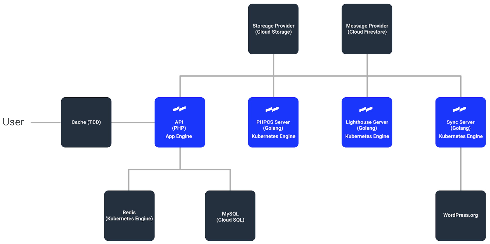

Vision
A rising tide lifts all boats. -- United States President, John F. Kennedy (borrowed from the New England Council)
Inspired by the proverb “A rising tide lifts all boats”, when we lower the barrier of entry to writing and choosing quality code for enough people, it will lift the quality of code across the whole WordPress ecosystem. Tide’s vision is to make it easy to improve the quality of code throughout the WordPress ecosystem and help WordPress site owners make better choices about plugins and themes.
Overview
Tide is an automated tool to provide insight into WordPress code and highlight areas to improve the quality of plugins and themes.
Tide services are responsible for the following:
- The Sync Server polls the WordPress.org API's for themes and plugins to process and writes them to a queue.
- The PHPCS Server reads messages from a queue and runs reports against both plugins and themes, then sends the results back to the Tide API.
- The Lighthouse Server reads messages from a queue and runs Google Lighthouse reports against the themes only, then sends the results back to the Tide API.
Architecture diagram
The following diagram notes the Google Cloud Platform (GCP) components, Tide services components, and pending link with WordPress.org for the PHP Compatibility integration.

Working with Tide
Currently you can:
- Search for plugins & themes and view their audit reports in this documentation.
- Install Tide to help test and develop locally.
- Deploy Tide to Google Cloud Platform and run your own variation of Tide in the cloud.
In the future you will be able to use Tide as a service to test your plugins or themes during development.
Contributing
Please read our Contributing guide for details on the process of creating a ticket or submitting a pull request to Tide, and our Code of Conduct.
Maintainers
Derek Herman (@valendesigns), and Jeffrey Paul (@jeffpaul)
Contributors
Props: Bartek Makoś (@MakiBM), Brendan Woods (@brendanwoods-xwp), Daniel Louw (@danlouw), David Cramer (@davidcramer), David Lonjon (@davidlonjon), Derek Herman (@valendesigns), Dušan D. Majkić (@dmajkic), Jeffrey Paul (@jeffpaul), Jonathan Wold (@sirjonathan), Joshua Wold (@jwold), Justin Kopepasah (@kopepasah), Keanan Koppenhaver (@kkoppenhaver), Leo Postovoit (@postphotos), Lubos Kmetko (@luboskmetko), Luke Carbis (@lukecarbis), Miina Sikk (@miina), Mike Crantea (@mehigh), Rheinard Korf (@rheinardkorf), Rob Stinson (@robstino), Sayed Taqui (@sayedtaqui), Ulrich Pogson (@grappler), Utkarsh Patel (@PatelUtkarsh)
Contact Us
Have questions? Don't open an Issue, come join us in the #tide channel in WordPress Slack. Even though Slack is a chat service, sometimes it takes several hours for community members to respond — please be patient.